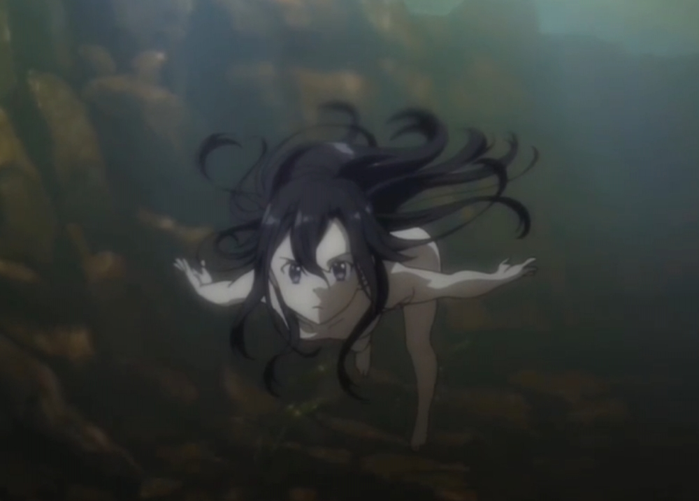

第三百八十六章 限量版桐人写真
“不在啊？”
将卫星扫描接收器上的全部点了一下后，在其中诗乃并没有看到自己寻找的人的名字。
“已经被♂掉了吗？”
桐子——虽然说使用的不是初期角色，但是从其他游戏里转过来的少女对这个游戏而言到底只是个新手，虽然之前的剑技表现的很亮眼，但果然还是失手了吧。
“真遗憾。”诗乃发出轻微的感叹，之前败在这个个性奇怪总是以男性用语自称的小妹妹手上可是让她耿耿于怀呢，想要在这次决赛里再正面和她打一次。
“遗憾？你可不要小瞧那家伙哦，她无论是运气和实力都非常出色呢。”
月姬神出鬼没的坐在了诗乃边上说道。
“可是卫星数据……难道有什么躲避卫星的方法？”诗乃的反应很快，马上就明白了这个赛场里还有不为人知的秘密规则。
“要知道吗？”月姬笑眯眯的看着诗乃。
“我不需要你帮忙，但是也请你不要打扰我的比赛好吗？”
诗乃轻哼了一声对月姬表示不满，她想要的是一场公平的比赛，就算答应做诱饵，但也不表示她愿意对方干涉自己的比赛，虽然对方一直说不会帮自己，但是就刚刚的提示，已经算是对她的帮助了。
如果没猜错的话，现阶段被打倒的玩家，并没有九个，如果把桐人排除的话，最多只有八人出局，甚至更少也说不定。
这样的话，不能掉以轻心呢，说不定什么时候就被知道躲避卫星的方法的玩家埋伏了。
在这样想着的时候，上空的监视卫星似乎已经离开，表示在仪器上的所有光点也开始闪烁起来。大概再十秒左右情报就会消失了。
并没有等待卫星情报完全完全消失，诗乃直接将仪器收回腰包里，如果月姬说的没错的话，这个地图上的情报也就是参考意义的而已，除了她确实干掉的两个，其他七、不，是其他六个人都在监控之外存活着都是有可能的，比起关注地图，还是关注下周边比较靠谱。
重新背好右肩上的黑卡蒂后，诗乃放低身子，再度飞奔于灌木林之中。
在周边，有两个进行追逐战的玩家毫无所觉的踏入了她的狩猎范围，现在她要去猎杀掉至少其中一个人！
少女顺利穿越暗茶色山麓地带，冲进最后一株灌木丛，眼前立刻出现一条有着红色反光的带状物体。
那当然是一条河。流水由南边山里奔出，蛇行穿过整个地图中央后朝北方而去，最后消失于远方那笼罩在云雾底下的遗迹都市里。
河流对岸则是耸立着诸多巨大古木的森林。苍郁的树梢下方，能见到有条石头小径蜿蜒其中。小径在诗乃潜伏的位置北方两百公尺处碰上河流，并连接了一条简单的铁桥。
“马上就要出来了吧？别这样看着我，才没有帮你呢，你也是这么想的啊。”月姬耸了耸肩说道。
“……”诗乃眨了眨眼睛，“不，我只是感觉他们还在树林的小径上全力冲刺……原来要出来了吗？”
诗乃的目光回到了树林的边缘，马上有道人影由生长在小径与铁桥交接处的巨大古木阴影里直线冲出。诗乃急忙将黑卡蒂架在地上，等不及掀起瞄准镜上的可掀式护罩便直接将眼睛凑了上去。
出来的是多次参加BOB决赛的老鸟玩家戴因，在前几天诗乃还参加过几次由戴因率领的中队的任务，所以诗乃很清楚这个人擅长中距离战斗。虽然在人格上不怎么值得尊敬，但确实是个不能小看的对手。
而把实力不容小觑的戴因像过街老鼠般追着跑的，诗乃记得是一个叫做PaleRider的玩家，老实说诗乃根本没见过他，当然也没和他交过手，明明是第一次参加BOB大赛，却能做到这个地步……难道他真的那么强？还是武装适合该处的地形？
在思考还没有现身的猎物的情报的同时，毫不影响诗乃对眼前的猎物的注意力。
“任何时候都要注意自己的身后啊，戴因。”诗乃轻声的喃喃道。
大概是打不过PaleRider，所以戴因想要借助特殊地形来制造反杀的机会，铁桥大概五十公尺的长度，如果先一步过桥的话吗，确实可以单方面攻击想渡过铁桥的敌人。不过……对于可能位在河川这一侧的敌人来说，他可是将背部毫无防备地暴露出来呢。
如果之前诗乃的打算是等戴因和PaleRider交手的时候出手，现在的话，直接动手！
诗乃静静将手指放在黑卡蒂扳机上，就在要扣扳机的时候，诗乃犹豫了……
这样真的可以吗？
戴因从树林里出来这件事，是月姬提前说的，虽然没有太大的意义，但是却让诗乃有一种作弊似得卑鄙感觉。
“算了吧！”
诗乃轻轻地叹了口气，松开了扳机，暂时就放过戴因吧。
说起来，月姬呢？
在升起这样想法的时候，一股奇怪的感觉在蔓延……
诗乃记得，以前做任务也曾经有这样的感觉，那是……被人埋伏的时候！
完全不明白那是什么原理的感觉，真的要说，可能是直觉吧！即使未必准确，但却不能忽视！
——自己背后有人！！！
明明通过作弊的方式知道了间谍卫星的情报只能作为参考，但是自己竟然在观察敌人的时候疏忽了背后的警戒！
实在是太大意了！
诗乃的右手从黑卡蒂上移开，她的身体就像弹簧般反转一百八十度，接着用左手拔出辅助武器【MP7】冲锋枪。
然而，在诗乃将MP7往正后方伸了出去的同一时间也有一道黑色枪口出现在她眼前。
果然，是真的有人逼近到贴身距离了。
“所以说，不要小瞧他哦。”就在诗乃准备全力一搏将弹匣里的子弹全部射光的时候，月姬再次出现，趴着诗乃身边笑眯眯的看着她。
“等等！”
然后，几乎是同一时间，作为袭击者的敌人也放出了暂停攻击的指令。
诗乃瞪大双眼，将视线的焦点由枪口转移到对方脸上。
是桐人！
长及腰部的亮丽黑发、即使受到夕阳照射也依然白皙的肌肤，以及闪烁着强烈光芒的细长瞳孔。
诗乃是绝对不会认错的！那是昨天才玩GGO，并且参与了BOB预赛还将她击败晋级决赛的那个女孩！
“虽然什么样的图片我都能用3D软件做出来，但是，凭空捏造的东西果然不如事实来的有趣。”
只能被诗乃看见的白发少女笑眯眯的在自己的面前展开了几张照片，那是自己面前的黑发少女的照片，是只穿着内衣，在水里游泳的样子。
“我想，莉法、莉兹，还有西莉卡一定会很感兴趣，哦，对了，还有克莱因！”
那是谁？
听到月姬自说自话的诗乃脑子里升起这样的疑问。
【……copy真棒，不过你们大部分人估计都没看过小说原文，看过的也忘记了，当然，我也不是一大段直接复制黏贴，到底是改动过重新组织语言的，其实这就是我不上架不写原创的原因，我似乎缺了什么，没有独立描述场景的能力】【污客不让写被·干，就把干换成♂……括弧笑】